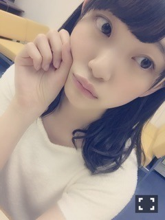

2016/0515Sun歩く時つまさきに重
こんにちは！
堀未央奈です

先日、じょしらくチームくの
ゲネプロを観に行ってきました。
本当に面白くて椅子を揺らしながら
大笑いしました！
観ていて色んな刺激もいただき
考えることができました。
私は映像のお芝居をやってみたいと
ずっと思っているけれど、舞台のお芝居は
映像とまた違った難しさがあるのかなと
客観的に見ることによって改めて
気づきました。
ちはるさんもれいかさんも琴子もみり愛も
井上さんも1人1人が個性豊かで
本当に、楽しかった〜
みり愛が本当に可愛いの。
本番前と本番後に未央奈〜って
抱きついてくるんだもん。
"守ってあげたい"とはこの事か(p_-)
何らかの形でまた新たな作品作りに
挑戦してみたくなりました。
自分で幅を狭めずに色んな事に
挑戦していく勇気が
今の私には必要かなと気づきました。
今のやるべきことは、夏の全国ツアー。
去年のライブの目標は
その前の年のライブの自分を
超えることだったので今年は更に
成長した姿や"色んな堀未央奈"を
見てもらえるように頑張りたいと思います
あとはライブ中に沢山の方と
コミュニケーションを取ったりしたい♪
暑さに負けず頑張るぞ〜✨


明日のNOGIBINGO!6は
猫企画 ฅ ̳• ·̫ • ̳ฅ
みてにゃ〜〜
あとお休みの日に
ずっと前から約束していて
やっと湯本亜美ちゃんと卒業旅行に
行けました！イースターの時期の
ディズニーは初めてでした♪

ぴょん
同じクラスで仲良くしてもらってて
亜美はおっとりマイペースで
優しくて真面目で天然で
一緒にいて落ち着くんです。
ヒノキ花粉の事、エノキ花粉って
言っていました笑
チュロスはシナモン味が
好きヽ(*・ω・*)ﾉ

卵料理好きだから、イースターに
わくわくしました！
また行きたいなぁ
発売中⇩
○「バイオハザードぴあ」
○「別冊カドカワ」
○「読売中高生新聞」
○「AKB新聞」
○「EX大衆」
○「BRODY」渡辺麻友さんと
私の両面ポスター付き
○「FLASHスペシャルGW号」
○「スポーツニッポン」
○「TVガイド」
○5/18「anan」
○6/10「MARQEE」
TV、ラジオ
○毎週日曜日 18:00〜
乃木坂の「の」
○毎週日曜日 24:00〜
乃木坂工事中
○毎週月曜日
NOGIBINGO!6
今日は18時から乃木のので
2期生曲初解禁です！！！
乃木坂工事中も見てね
部活動、頑張りますっ
えいやー
ではでは♪
2016/05/15 08:30
コメント(444)
お仕事ご苦労さまです。
2期生曲 分かりやすいじゃん。


2期生曲 分かりやすいじゃん。
未央奈ブログ更新ありがとう！
昨日の握手会お疲れ様〜
昨日の握手会、応募して券持ってたのに行けなくなっちゃったの
昨日の握手会お疲れ様〜
昨日の握手会、応募して券持ってたのに行けなくなっちゃったの
初ディズニーおめペロΣ(◕ˇﾛˇ◕ﾉﾉ 星が(￣ー+￣)ｷﾗﾘ 冷蔵庫に高級ちくわがあります 挑戦fight(*ﾟ▽ﾟ*) 兎堀殿川湯(￣ＴＴ￣）鼻血 堀殿Ｒの法則(*∩∀∩*)ﾜｸﾜｸ♪ 真夏さんの服\(//∇//)\ 眼鏡 隣渡辺さんww( ;谷) 風雨が強いでふ
乃木坂工事中新入部員大募集後半の回観ました。堀殿オヌヌメのアクションクラブ!ＮＡＣ!堀殿が描いたミラジョボビッチさんの絵、回し蹴りの絵、ロンダードバク転punchの絵素晴らしかったなぁﾔﾎ━━(*≧∇≦)ﾉ━━ｲ♪ 和田まあやさんのkickと川後陽菜さんのkickもよかったですねww(゜д゜)アクションクラブの入部希望者が一番多かったですねウレピーポーUo･ｪ･oU/ﾟ･:*【祝】*:･ﾟ＼Uo･ｪ･oU
ＥＸ大衆６月号(σ･∀･)σｹﾞｯﾂ!クリアファイルに堀殿発見(*ﾟДﾟ) ﾑﾎﾑﾎ
乃木坂の(の)堀殿×和田さん×純奈さんの回拝聴しました。全国握手会堀殿純奈さんペア運転免許和田さんのチークスマホカメラアプリ乃木坂三分の一ランドセルピンク色和田さん左右違う靴下トークなど～今回の堀殿もcuteでした(o￣◎￣)oバブゥ
お食事fight!ティラミスパンケーキパワーでペロファイヾ(=ﾟ･ﾟ=)ﾉﾆｬﾝ♪
┌(_ω_┌ )┐))))))))ｶｻｶｻ
乃木坂工事中新入部員大募集後半の回観ました。堀殿オヌヌメのアクションクラブ!ＮＡＣ!堀殿が描いたミラジョボビッチさんの絵、回し蹴りの絵、ロンダードバク転punchの絵素晴らしかったなぁﾔﾎ━━(*≧∇≦)ﾉ━━ｲ♪ 和田まあやさんのkickと川後陽菜さんのkickもよかったですねww(゜д゜)アクションクラブの入部希望者が一番多かったですねウレピーポーUo･ｪ･oU/ﾟ･:*【祝】*:･ﾟ＼Uo･ｪ･oU
ＥＸ大衆６月号(σ･∀･)σｹﾞｯﾂ!クリアファイルに堀殿発見(*ﾟДﾟ) ﾑﾎﾑﾎ
乃木坂の(の)堀殿×和田さん×純奈さんの回拝聴しました。全国握手会堀殿純奈さんペア運転免許和田さんのチークスマホカメラアプリ乃木坂三分の一ランドセルピンク色和田さん左右違う靴下トークなど～今回の堀殿もcuteでした(o￣◎￣)oバブゥ
お食事fight!ティラミスパンケーキパワーでペロファイヾ(=ﾟ･ﾟ=)ﾉﾆｬﾝ♪
┌(_ω_┌ )┐))))))))ｶｻｶｻ
みおな、おはょ（＾Ｏ＾☆♪
乃木中、みたよ〜
みおなと日村先輩のプレゼンが良かったのか
アクションクラブ、大人気だったね(o^^o)
部活動が始まるのが、楽しみ。
乃木中、みたよ〜
みおなと日村先輩のプレゼンが良かったのか
アクションクラブ、大人気だったね(o^^o)
部活動が始まるのが、楽しみ。
未央奈、こんにちは
乃木中、観たよ。 NAC部、人気だね
乃木中、観たよ。 NAC部、人気だね
みおなちゃん、こんにちわっ。乃木中見たよー。乃木坂４６アクションクラブ（NAC）に入部の人がたくさんいたねー。お仕事につながる、ってプレゼンしたのが良かったかな？バレッタのMVの時に多少指導を受けてるメンバーもいるからかなぁ。ミラ・ジョヴォヴィッチみたいになりたいのね。『バイオハザードVI ザ・ファイナル』のmovie trailer見てみたけど、凄いことになってるね。年末公開？日本が世界最速公開なんだね。あと乃木のの、聴いたけど、中国語とインドネシア語？だったかな。お仕事につながりそう・・なるほど、アジア圏には進出の基盤がある！？姉妹グループの拡大は進んでるね。英語は現地に行けばすぐ覚える・・みおなちゃん、英語得意みたいだしね。あとThe BumpsのMV見てみたよ。そういえば海外のボーイズアイドルグループをよく聴いている印象があるね。以前みおなちゃんがよく聴いてるってグループはそのジャンルが多かったような。僕の勘違いかな？いつもながら、みおなちゃんは話題豊富だね。またね！
昨日の握手会お疲れ様でした！そしてありがとう
未央奈ちゃんっ！こんにちは！コメント一日遅れでごめんね！
じょしらく、ゲネプロ見に行ったんだね！舞台をみて、刺激を受けたんだね！未央奈ちゃんの舞台も見てみたいなぁ！
みり愛たん、可愛いね！未央奈ちゃんに抱きついてくるなんて！昨日、今日とメールとか755でも大食いシスターズの写真やら動画やらを送ってくれて嬉しいなぁー！
挑戦する勇気か！何事にも大事だよね！これから先、もっと色んな未央奈ちゃんが見られることを楽しみにしてるよ！未央奈ちゃんが頑張るなら、俺も同じくらい色んなこと頑張るね！
未央奈ちゃんは、真夏の全国ツアー、俺は受験の夏、お互い暑さに負けず頑張ろー！
あ、でも、夏本番に入る前の7月、握手会で会える！まずは、それを楽しみに頑張るぜ！
今夜のNOGIBINGO、猫企画！楽しみだにゃー！
やっぱりディズニー行ったんだね！メールで写真送られてきたときは、ビックリしたもん！
卒業旅行にディズニーランドか！夢の国って幸せな気持ちになるよねー！俺もチュロスは甘い系がすき！
今週こそananの発売だね！笑 絶対チェックするよー！
昨日の乃木のの面白かったよー！最近の未央奈ちゃん、MC慣れしたのか、リラックスしてて、素の感じが出てるね！来週も楽しみや！
かき氷の片思い、解禁されたね！そういう系統かー！いい意味で裏切られた！どっちかっていうとアンダー曲の路線を引き継いだ感じだね！別れ際→嫉妬→不等号→かき氷って！初めての二期生曲、大切にしようね！
ただ、アルバムの未央奈ちゃん参加曲のなかでは、やっぱthreeholdchoiceが一番好きだなぁ！テンポ感とか好き！
乃木中も面白かった！NAC大人気だったね！日村さんとのお笑い劇場も良かった！今後の活動が楽しみやー！
そう、聴いて！俺ね、今週ラジオのヒット率がめっちゃ高かったの！１週間で4番組でメール読まれた！まいちゅんのANN0とひめたんのらじらーでも！らじらーは3回目！この調子で乃木ののも読まれないかなぁー？毎日送ってるんだよ！んー、読まれたーい！
では、まったねー！
じょしらく、ゲネプロ見に行ったんだね！舞台をみて、刺激を受けたんだね！未央奈ちゃんの舞台も見てみたいなぁ！
みり愛たん、可愛いね！未央奈ちゃんに抱きついてくるなんて！昨日、今日とメールとか755でも大食いシスターズの写真やら動画やらを送ってくれて嬉しいなぁー！
挑戦する勇気か！何事にも大事だよね！これから先、もっと色んな未央奈ちゃんが見られることを楽しみにしてるよ！未央奈ちゃんが頑張るなら、俺も同じくらい色んなこと頑張るね！
未央奈ちゃんは、真夏の全国ツアー、俺は受験の夏、お互い暑さに負けず頑張ろー！
あ、でも、夏本番に入る前の7月、握手会で会える！まずは、それを楽しみに頑張るぜ！
今夜のNOGIBINGO、猫企画！楽しみだにゃー！
やっぱりディズニー行ったんだね！メールで写真送られてきたときは、ビックリしたもん！
卒業旅行にディズニーランドか！夢の国って幸せな気持ちになるよねー！俺もチュロスは甘い系がすき！
今週こそananの発売だね！笑 絶対チェックするよー！
昨日の乃木のの面白かったよー！最近の未央奈ちゃん、MC慣れしたのか、リラックスしてて、素の感じが出てるね！来週も楽しみや！
かき氷の片思い、解禁されたね！そういう系統かー！いい意味で裏切られた！どっちかっていうとアンダー曲の路線を引き継いだ感じだね！別れ際→嫉妬→不等号→かき氷って！初めての二期生曲、大切にしようね！
ただ、アルバムの未央奈ちゃん参加曲のなかでは、やっぱthreeholdchoiceが一番好きだなぁ！テンポ感とか好き！
乃木中も面白かった！NAC大人気だったね！日村さんとのお笑い劇場も良かった！今後の活動が楽しみやー！
そう、聴いて！俺ね、今週ラジオのヒット率がめっちゃ高かったの！１週間で4番組でメール読まれた！まいちゅんのANN0とひめたんのらじらーでも！らじらーは3回目！この調子で乃木ののも読まれないかなぁー？毎日送ってるんだよ！んー、読まれたーい！
では、まったねー！
昨日の握手会もお疲れ様。
乃木のの、聞きました。 純奈さんが、来ると、未央奈さんの、素
が出ていいですね。 ただ、まあやさんとの会話で、何かおもしろ
い事が、起こった場面が、あったはずですが、何があったかを、
司会の立場として説明して欲しかったです。
乃木ののに限らずですが、未央奈さんや、ゲストのメンバーの素な
感じが、聞きたいので、それを、引き出す工夫が、これから
あるといいと思います。
では、次は、乃木中録画観ます。
昨日は、これを、かけたのかー。ボストンタイプ、銀縁？
今度、黒縁お願いしまする。
ブログ更新お疲れ様です！
2期生曲かき氷の片想いききました。
いい意味で2期生らしくない2期生の良さがでた曲だと思いました。
パフォーマンスがとても楽しみです。
明日もお仕事頑張ってください！
2期生曲かき氷の片想いききました。
いい意味で2期生らしくない2期生の良さがでた曲だと思いました。
パフォーマンスがとても楽しみです。
明日もお仕事頑張ってください！
未央奈６月４日パシフィコ横浜みなみコーディネート当たった友達のナオッチさんが久々に行くからよろしく。
ナオッチさんはみなみのお茶会当たってみなみのテーブルに座った時近くに未央奈もいたと喜んでたよ
岐阜の話した人だよ
秀幸より
ナオッチさんはみなみのお茶会当たってみなみのテーブルに座った時近くに未央奈もいたと喜んでたよ
岐阜の話した人だよ
秀幸より
やっぴ〜♪
遊です。
更新ありがとね♪
可愛い画像ありすぎてメロメロに\(♡~♡)/
｢可愛い｣って言葉は未央奈のために存在してるんじゃないか？って思えるほど･･･
一昨日コメントした後にうさ耳未央奈の写メ届いて、
｢なんじゃこりゃぁぁぁぁぁ！可愛すぎんだろ！！｣
って即待ち受けに(笑)
いやいやいや、ズルいってば〜
あんなの釣られるに決まってるやん！
｢かりんから純奈たちとディズニー行ってきたってうさ耳の写真届いたけど、未央奈も行ったのかな？｣と思ったらAKBの子と行ってたのね。
未央奈とディズニー･･･
絶対楽しいだろうなぁ
そんな透けてるお洋服にショーパンだなんて、周りがドキドキしちゃうよ(๑•﹏•๑*)
ただでさえ可愛くて目立つのにそんなの着ちゃったらさぁ(笑)
座ってるうさぎ未央奈ももぉたまらん！！
ぶち好きじゃけぇ！(笑)
可愛い顔でスタイル良くて美脚で、白のお洋服もよく似合ってて、、、
どこ取っても好きなところだらけやなぁ
昨日握手会行こうとしてた時にこんな可愛い写真見せられたら、
会えないのに〜っていう悲壮感が･ﾟ･(｡>д<｡)･ﾟ･
早く会いたいよぉ
アルバムの京都握手会まで後1ヶ月ちょっと。
こんな可愛い未央奈見てて我慢出来るかなぁ(笑)
真夏から貰った洋服も似合ってて(〃∀〃)
セクシー未央奈ちゃんこれから見れるのかなぁ。
メガネもやってたのね。
やっぱり行きたかったぜorz
行った人達の未央奈の可愛さ報告受けるたびに凹んでいく･･･(笑)
みり愛とのラブラブ動画も見ましたよ♪
2人とも会いたいのに会えなかったからもうなんというか(>_<)
会いに来てないから！
って怒られたい、、、
ぷく顔可愛すぎるやけん！
こんなの生で見たらたまらんのやろうなぁ
未央奈に会えない
↓
会いたい欲がたまる
↓
未央奈が可愛い写真をモバメ、ブログに載せる
↓
さらに会いたくなる
↓
アルバムの券取る
って、こーやって予定以上に握手券の枚数増えちゃうんだろうな(笑)
まっ、未央奈にたくさん会えるならそれに越したことはないんだけど(*´ω`*)
それじゃあね〜(｡･ω･)ﾉﾞ
遊です。
更新ありがとね♪
可愛い画像ありすぎてメロメロに\(♡~♡)/
｢可愛い｣って言葉は未央奈のために存在してるんじゃないか？って思えるほど･･･
一昨日コメントした後にうさ耳未央奈の写メ届いて、
｢なんじゃこりゃぁぁぁぁぁ！可愛すぎんだろ！！｣
って即待ち受けに(笑)
いやいやいや、ズルいってば〜
あんなの釣られるに決まってるやん！
｢かりんから純奈たちとディズニー行ってきたってうさ耳の写真届いたけど、未央奈も行ったのかな？｣と思ったらAKBの子と行ってたのね。
未央奈とディズニー･･･
絶対楽しいだろうなぁ
そんな透けてるお洋服にショーパンだなんて、周りがドキドキしちゃうよ(๑•﹏•๑*)
ただでさえ可愛くて目立つのにそんなの着ちゃったらさぁ(笑)
座ってるうさぎ未央奈ももぉたまらん！！
ぶち好きじゃけぇ！(笑)
可愛い顔でスタイル良くて美脚で、白のお洋服もよく似合ってて、、、
どこ取っても好きなところだらけやなぁ
昨日握手会行こうとしてた時にこんな可愛い写真見せられたら、
会えないのに〜っていう悲壮感が･ﾟ･(｡>д<｡)･ﾟ･
早く会いたいよぉ
アルバムの京都握手会まで後1ヶ月ちょっと。
こんな可愛い未央奈見てて我慢出来るかなぁ(笑)
真夏から貰った洋服も似合ってて(〃∀〃)
セクシー未央奈ちゃんこれから見れるのかなぁ。
メガネもやってたのね。
やっぱり行きたかったぜorz
行った人達の未央奈の可愛さ報告受けるたびに凹んでいく･･･(笑)
みり愛とのラブラブ動画も見ましたよ♪
2人とも会いたいのに会えなかったからもうなんというか(>_<)
会いに来てないから！
って怒られたい、、、
ぷく顔可愛すぎるやけん！
こんなの生で見たらたまらんのやろうなぁ
未央奈に会えない
↓
会いたい欲がたまる
↓
未央奈が可愛い写真をモバメ、ブログに載せる
↓
さらに会いたくなる
↓
アルバムの券取る
って、こーやって予定以上に握手券の枚数増えちゃうんだろうな(笑)
まっ、未央奈にたくさん会えるならそれに越したことはないんだけど(*´ω`*)
それじゃあね〜(｡･ω･)ﾉﾞ
堀ちゃん、こんにちは。乃木中見ました！
ブログの中の挑戦というキーワード、前の生ちゃんへのさんづけをやめようということに続いてアクションクラブ立ち上げは拍手しました！アクションをするためもあるけどベストコンディションを造ることにも繋がると思うし、これは乃木中で活動レポートをまめにとりあげてほしいです。
…まずは部員の体力スキルチェックからいこう！
堀ちゃんが元気な企画を出してくれて嬉しかった。二期生パワー見せてやろう！
ブログの中の挑戦というキーワード、前の生ちゃんへのさんづけをやめようということに続いてアクションクラブ立ち上げは拍手しました！アクションをするためもあるけどベストコンディションを造ることにも繋がると思うし、これは乃木中で活動レポートをまめにとりあげてほしいです。
…まずは部員の体力スキルチェックからいこう！
堀ちゃんが元気な企画を出してくれて嬉しかった。二期生パワー見せてやろう！
未央奈！握手会お疲れ様！
未央奈と握手して、元気もらったからまた1週間頑張れる
未央奈と握手して、元気もらったからまた1週間頑張れる
あかん、チュロス思い出してわろてるｗｗｗｗ
ねー、初めて握手会した時、さおりチュロス噛んだん思い出したわｗｗｗｗ
チョロスやっけ？笑
ねー、初めて握手会した時、さおりチュロス噛んだん思い出したわｗｗｗｗ
チョロスやっけ？笑
未央奈６月４日パシフィコ横浜みなみコーディネートとみなみお茶会当たった友達のナオッチさんが久々に行くからよろしく。
１月３１日個握で岐阜の話した人だよ愛知県に以前ナオッチさんは住んでたから
秀幸より
１月３１日個握で岐阜の話した人だよ愛知県に以前ナオッチさんは住んでたから
秀幸より
みおなー♡
昨日の握手会、凄く楽しかった！ありがとう〜！
大食いシスターズのループ、楽しかったなー（笑）
みりあへ伝えることを聞いてる時、未央奈のみりあへの愛情を凄く感じて、ほんとに好きなんだなーってw
いつも見れない未央奈を見れたようで嬉しかった（笑）
未央奈とみりあの会話の間に入ってる様な感じで不思議な感覚だったよw
毎回やるとウザいと思うので、たまに大食いシスターズループさせてもらいたいですw
NAC、人気で良かったね！！
部長として、頑張って盛り上げてねw
リアクションも面白くて、未央奈って凄いなって思う！
乃木中やNOGIBINGOで毎回の様に活躍してて、しかもめっちゃ面白くて可愛くて…
バラエティであんなに活躍するって出来ることじゃないと思うよ！
未央奈推しとして、頼もしいです♡
再来週もその次の週も握手会だね！
もちろん、会いに行くよ！
疲れも溜まってると思うけど、身体に気をつけて引き続き頑張ってね！
いつも、いつまでも応援してるよ！
昨日の握手会、凄く楽しかった！ありがとう〜！
大食いシスターズのループ、楽しかったなー（笑）
みりあへ伝えることを聞いてる時、未央奈のみりあへの愛情を凄く感じて、ほんとに好きなんだなーってw
いつも見れない未央奈を見れたようで嬉しかった（笑）
未央奈とみりあの会話の間に入ってる様な感じで不思議な感覚だったよw
毎回やるとウザいと思うので、たまに大食いシスターズループさせてもらいたいですw
NAC、人気で良かったね！！
部長として、頑張って盛り上げてねw
リアクションも面白くて、未央奈って凄いなって思う！
乃木中やNOGIBINGOで毎回の様に活躍してて、しかもめっちゃ面白くて可愛くて…
バラエティであんなに活躍するって出来ることじゃないと思うよ！
未央奈推しとして、頼もしいです♡
再来週もその次の週も握手会だね！
もちろん、会いに行くよ！
疲れも溜まってると思うけど、身体に気をつけて引き続き頑張ってね！
いつも、いつまでも応援してるよ！
こんばんは！
香川の浪人生なおやん⊿です！
全ツ大阪初日の公演に行くことになりました！
初めてライブ行くけん緊張やけど今からすでに楽しみにしとる！
タオルとサイリウム持って行くけん見つけたら何かしてほしいな〜
未央奈はファンを見つけると何をよくするんですか？
香川の浪人生なおやん⊿です！
全ツ大阪初日の公演に行くことになりました！
初めてライブ行くけん緊張やけど今からすでに楽しみにしとる！
タオルとサイリウム持って行くけん見つけたら何かしてほしいな〜
未央奈はファンを見つけると何をよくするんですか？
このウサギ飼いた……なんでもないです
乃木中の堀ちゃんプレゼンのＮＡＣの反響が凄かったね
あれだけ入部希望者が集まるなんて
この前、NOGIBINGOでみさ先輩がキックボクシングジムを
訪れたいってことで行ったけれど・・・そんなに乃木坂
にはストレスを抱えているメンバーが大勢いるの ってちょっと心配になっちゃったよ。
ってちょっと心配になっちゃったよ。
・・・いや
きっと入部希望者のメンバーは堀ちゃんの
イラストに心動かされて入部したに違いない
あれだけ入部希望者が集まるなんて
この前、NOGIBINGOでみさ先輩がキックボクシングジムを
訪れたいってことで行ったけれど・・・そんなに乃木坂
にはストレスを抱えているメンバーが大勢いるの
・・・いや
きっと入部希望者のメンバーは堀ちゃんの
イラストに心動かされて入部したに違いない
受験やら大学やらで大変で1年振りくらいのコメントっす！w
チュロスやっぱりおいしいですよねー
シーのほうストームライダー終わっちゃったねT^T
チュロスやっぱりおいしいですよねー
シーのほうストームライダー終わっちゃったねT^T
センターになる日をいつまでも待ってます。
ずっとセンターがいいよ。
ずっとセンターがいいよ。
未央ちゃん こんばんは
宣伝めっちゃあるね
多すぎて追い付けん…
ごめんなさい…
未央奈が頑張ってる証拠
多すぎて追い付けん…
ごめんなさい…
未央奈が頑張ってる証拠
俺も乃木坂アクションクラブ入りたい～
みなみおなぁちゃんのスリーショット欲しい～
みなみおなぁちゃんのスリーショット欲しい～
未央奈、おはよう。こんにちは。こんばんは。
モバメお返事タイム！
NOGIBINGO、リアルタイムでは見れないけど録画して見るね！…って今日もまた大食いシスターズ！！ヽ(´>∀<`*)ﾉ
でーん。メガネ姿も可愛いね(*´ω｀*)
モバメお返事タイム！
NOGIBINGO、リアルタイムでは見れないけど録画して見るね！…って今日もまた大食いシスターズ！！ヽ(´>∀<`*)ﾉ
でーん。メガネ姿も可愛いね(*´ω｀*)
堀ちゃん こんばんは
ちょうどお風呂中で揺れてビックリ。
地震はほんと恐いです((((；゜Д゜)))
このブログの１枚目の未央奈いいね！
大人びてる！上野樹里さんに負けない素敵な笑顔だよ。何故かダウンロードできず、いーって思いしてる。
蹴りは爪先に重心なのかな？
乃木中日村さんとのショートコント面白かったよ。
それに堀画伯のミラジョボも(^^)v
バイオハザードはゲームやったことないけと、映画はテレビで観てるよ。
美しくてたくましい！ミラジョボはまさにアクション女優だよね。
他に思い付くのは、エイリアンのリプリー（シガウエ）、アンジーかなー
ざ、ハリウッドだなぁ。
ミラジョボは、個人的にはリュック・ベッソン監督作品のフィフスエレメント！の「リールー」が最高でした。
スーパーモデルのオーラ半端なかったさ。
あー、アクション部最多入部おめでとう！パチパチ
入部届けが入る度に、嬉しくて目を細めて笑う未央奈は「３月のライオン」10巻、3ページ目位の「ひなちゃん」そのものでした。
なんてかわいい（*＾3＾）/～☆
kuribou
ちょうどお風呂中で揺れてビックリ。
地震はほんと恐いです((((；゜Д゜)))
このブログの１枚目の未央奈いいね！
大人びてる！上野樹里さんに負けない素敵な笑顔だよ。何故かダウンロードできず、いーって思いしてる。
蹴りは爪先に重心なのかな？
乃木中日村さんとのショートコント面白かったよ。
それに堀画伯のミラジョボも(^^)v
バイオハザードはゲームやったことないけと、映画はテレビで観てるよ。
美しくてたくましい！ミラジョボはまさにアクション女優だよね。
他に思い付くのは、エイリアンのリプリー（シガウエ）、アンジーかなー
ざ、ハリウッドだなぁ。
ミラジョボは、個人的にはリュック・ベッソン監督作品のフィフスエレメント！の「リールー」が最高でした。
スーパーモデルのオーラ半端なかったさ。
あー、アクション部最多入部おめでとう！パチパチ
入部届けが入る度に、嬉しくて目を細めて笑う未央奈は「３月のライオン」10巻、3ページ目位の「ひなちゃん」そのものでした。
なんてかわいい（*＾3＾）/～☆
kuribou
ブログ更新ありがとうございます！
真夏のツアー楽しみにしています！
目標が達成できるように楽しんでくださいね！
いつも応援しています！
真夏のツアー楽しみにしています！
目標が達成できるように楽しんでくださいね！
いつも応援しています！
堀ちゃん こんばんは
舞台は楽しいよね。
観る方よりも、演じる方がよっぽど楽しいと思う。
演劇部に入れば良かったと後悔しています。
学生時代に演劇に出会いたかった。
みり愛ちゃんがんばれー！
ダンスを観に行くのも刺激的だよ。
神楽坂のセッションハウスでの舞台はお薦め！
アクション部のヒントがあるかもしれない。
あー、それと7月に池袋の東京芸術劇場シアターイーストで公演予定のカンパニーデラシネラの「ロミオとジュリエット」は観に行ってもらいたい！
ツアー中かなー？
でもでも観てもらいたい。
演劇とダンスのいいとこ取りなんだよ。
台詞は最小限でパントマイム要素と小道具、舞台美術でもっとも有名な「ロミジュリ（勝手に略してばかり 笑）」を表現するんだよ。
クールとユニークのバランスが絶品なんだから！
それにアクションシーンもあるから（確か）部長としては研究しないとね(^^)v
ああ、未央奈に伝えたいことたくさんありすぎるー((((；゜Д゜)))
おせっかいなkuribouでした
舞台は楽しいよね。
観る方よりも、演じる方がよっぽど楽しいと思う。
演劇部に入れば良かったと後悔しています。
学生時代に演劇に出会いたかった。
みり愛ちゃんがんばれー！
ダンスを観に行くのも刺激的だよ。
神楽坂のセッションハウスでの舞台はお薦め！
アクション部のヒントがあるかもしれない。
あー、それと7月に池袋の東京芸術劇場シアターイーストで公演予定のカンパニーデラシネラの「ロミオとジュリエット」は観に行ってもらいたい！
ツアー中かなー？
でもでも観てもらいたい。
演劇とダンスのいいとこ取りなんだよ。
台詞は最小限でパントマイム要素と小道具、舞台美術でもっとも有名な「ロミジュリ（勝手に略してばかり 笑）」を表現するんだよ。
クールとユニークのバランスが絶品なんだから！
それにアクションシーンもあるから（確か）部長としては研究しないとね(^^)v
ああ、未央奈に伝えたいことたくさんありすぎるー((((；゜Д゜)))
おせっかいなkuribouでした
堀ちゃん、こんばんは。
昨日の乃木中見ましたよ！
一番人集めてたのは堀ちゃんの人徳もあると思うよ。
無理せず頑張ってね(*^_^*)
昨日の乃木中見ましたよ！
一番人集めてたのは堀ちゃんの人徳もあると思うよ。
無理せず頑張ってね(*^_^*)
こんばんは! 堀ちゃん♪
ビンゴの動物企画というとホーリー思い出すなぁ。。
あれはハートを射抜かれた。。。。
さてさて、どんなネコちゃんになるかメッチャ楽しみです。
ビンゴの動物企画というとホーリー思い出すなぁ。。
あれはハートを射抜かれた。。。。
さてさて、どんなネコちゃんになるかメッチャ楽しみです。
こんばんみおな！
お疲れ様！堀ちゃんの丸京からもう1年経つんだね〜。
今回はじょしらく見に行けないんだけど、また乃木坂のメンバーが舞台する機会あったら見に行きたいな〜
1番は堀ちゃんの活躍を楽しみにしてるよ(^-^)
久しぶりに去年の神宮ライブ見てたんだけど、「羽の記憶」本当にいい曲だよね。
最後の "まだ眠る可能性 無限大だ" って歌詞が何かすごい響いて明日からまた頑張ろうって思えたよ！
堀ちゃんのこと、ずっと応援してる。身体には気をつけて、限界きめずに頑張ってな！
また握手会遊びいくね〜
今回はじょしらく見に行けないんだけど、また乃木坂のメンバーが舞台する機会あったら見に行きたいな〜
1番は堀ちゃんの活躍を楽しみにしてるよ(^-^)
久しぶりに去年の神宮ライブ見てたんだけど、「羽の記憶」本当にいい曲だよね。
最後の "まだ眠る可能性 無限大だ" って歌詞が何かすごい響いて明日からまた頑張ろうって思えたよ！
堀ちゃんのこと、ずっと応援してる。身体には気をつけて、限界きめずに頑張ってな！
また握手会遊びいくね〜
堀ちゃんこんばんはーー
メガネ姿がかわいらしすぎて、しばし茫然と見惚れてしまったよ…。大きいフレームのが流行っているみたいだけど、さすがによく似合うね
なんだろうな、図書館ですれ違ったらドキッとしそうだし、もし近くにいたら緊張しちゃって本なんか読めなさそうだ、笑
今日もお疲れさま。
明日も、頑張ろうねー
メガネ姿がかわいらしすぎて、しばし茫然と見惚れてしまったよ…。大きいフレームのが流行っているみたいだけど、さすがによく似合うね
なんだろうな、図書館ですれ違ったらドキッとしそうだし、もし近くにいたら緊張しちゃって本なんか読めなさそうだ、笑
今日もお疲れさま。
明日も、頑張ろうねー
未央奈さん、こんばんは。
モバメの写メ、メガネ可愛いですね。
正確には、メガネをかけている
未央奈さんが可愛いです。
四角い黒縁メガネ姿も見たいな！
ますます個握で見られなかったのが
悔しい
ノギビンゴ観るね。
みおねこ？かな？
それでは短いですが
おやすみおな
折りたたみ傘地蔵
モバメの写メ、メガネ可愛いですね。
正確には、メガネをかけている
未央奈さんが可愛いです。
四角い黒縁メガネ姿も見たいな！
ますます個握で見られなかったのが
悔しい
ノギビンゴ観るね。
みおねこ？かな？
それでは短いですが
おやすみおな
折りたたみ傘地蔵
堀ちゃん、15日放送の乃木坂工事中を観たよ。乃木坂アクションクラブ「NAC」12人ものメンバーさんが入部しましたね。おめでとうございます。バナナマンさん達が、誰がどの部に入部したいかを発表して行く時に「アクション」と言われていたから、嬉しかったです。乃木坂46の皆様はライブツアーが控えているから、具体的には秋頃からの活動になるのでしょう？堀ちゃん達のアクション部が一体、どんな活動をされるのか楽しみにしてます。
みおなの丸京、また見たかったな(*´ω｀*)
じょしらくさんに期待♪
じょしらくさんに期待♪
未央奈さん、今日もお疲れ様～。
そして昨日は握手会もお疲れ様＆ありがとう。
未央奈さんと握手ができて楽しかったよ。
未央奈さんもじょしらく見たんだね。
ほんとに今回も楽しい舞台になっているよね。
く、の舞台ってことは、去年と同じ丸京役は琴子さんだね。
去年のことを思い出したりしたのかな？
そして、目の前の全国ツアー。
暑いけれど頑張ってね。
私も、色々な未央奈さんを期待しているよ(*´∀｀*)
そして昨日は握手会もお疲れ様＆ありがとう。
未央奈さんと握手ができて楽しかったよ。
未央奈さんもじょしらく見たんだね。
ほんとに今回も楽しい舞台になっているよね。
く、の舞台ってことは、去年と同じ丸京役は琴子さんだね。
去年のことを思い出したりしたのかな？
そして、目の前の全国ツアー。
暑いけれど頑張ってね。
私も、色々な未央奈さんを期待しているよ(*´∀｀*)
堀さん755で夜更かしの注意遅れてごめんね！ 前の携帯でバクる事が多かったから携帯変えたんだけど、またバクったらしい。
バクって通知が来なかったりトークが見れない時がたまにあるんだぁ、それで反応遅れる時がたまにあります。
すいません！堀さん夜更かしは絶対にしたらダメだよ！
堀さんはいつも頑張ってるんだし、疲れてると思うから夜更かしは絶対にしたらダメ！
疲れた状態で夜更かししたら風邪をひいたり体調不良になるかもしれないんだから夜更かしは絶対にしたらダメだよ！！！
夜更かししないでちゃんと寝て身体の疲れをとって無理なく休みながら過ごして元気でいてね！！！
絶対に無理したらダメだよ！！！
無理しないで夜更かししないでちゃんと寝て身体の疲れわやとって無理なく休みながら過ごして元気でいてね！
夜更かしは身体に悪いから絶対にしたらダメだよ！
自分を大切に大事にして無理なく休みながら過ごして元気でいてね！！！
755、たまにバクって通知来ない時があるから反応遅れる時があります、すいません。
今日一日お疲れ様、いっぱい寝て元気でいてね！
おやすみおな、幸せな夢を見てね。
バクって通知が来なかったりトークが見れない時がたまにあるんだぁ、それで反応遅れる時がたまにあります。
すいません！堀さん夜更かしは絶対にしたらダメだよ！
堀さんはいつも頑張ってるんだし、疲れてると思うから夜更かしは絶対にしたらダメ！
疲れた状態で夜更かししたら風邪をひいたり体調不良になるかもしれないんだから夜更かしは絶対にしたらダメだよ！！！
夜更かししないでちゃんと寝て身体の疲れをとって無理なく休みながら過ごして元気でいてね！！！
絶対に無理したらダメだよ！！！
無理しないで夜更かししないでちゃんと寝て身体の疲れわやとって無理なく休みながら過ごして元気でいてね！
夜更かしは身体に悪いから絶対にしたらダメだよ！
自分を大切に大事にして無理なく休みながら過ごして元気でいてね！！！
755、たまにバクって通知来ない時があるから反応遅れる時があります、すいません。
今日一日お疲れ様、いっぱい寝て元気でいてね！
おやすみおな、幸せな夢を見てね。
未央ちゃん おはよー
元気にしてますか❗
まだ 寝てますね
では 今日も１日頑張ろう☀
元気にしてますか❗
まだ 寝てますね
では 今日も１日頑張ろう☀
お疲れ様～。(￣ー￣ゞ－☆
みおなちゃん愛してる～。
乃木中もチェックしたでっ！意外なダークホース！アクションクラブの人気っ！
進撃とかるろうに剣心やら、舞台やら2.5次元バトルアクションの流行りも続いてるからなぁ仕事の延長か…。
アクションあるかもなぁ…。
やっぱり積極性大事か、フェイスブックのCEO がリーンインて本の講演であんまり積極的な女の子はモテないからと手をあげないって話してたけどアメリカでもそんな感じになってまう。
日本やと出る杭は打たれるから自己主張しにくい雰囲気もあるしなぁ…。
でもこれがやりたいって普段から言い続けてないと話しが人に回って後からでもやって来ないと新聞で社長が言うし。
その場になると結構な勇気をださなあかんなぁ…。
自分で難しくしてしまわずにやってみようと思えるかどうか…。
チャンスに見えるかどうかも難しい…。
まぁ、気楽に行こう。
へばなっ！
大好きな堀ちゃん♥応援してるよ
みおなちゃん、おはようございます。
NOGIBINGO!６、僕の住む北海道（道東）は放送されないので、動画サイトで見たよ。みおなちゃん、めっちゃかわいかったよ。
みおなちゃん、体調に気をつけて仕事頑張ってね。
またコメントするね。
NOGIBINGO!６、僕の住む北海道（道東）は放送されないので、動画サイトで見たよ。みおなちゃん、めっちゃかわいかったよ。
みおなちゃん、体調に気をつけて仕事頑張ってね。
またコメントするね。
おはよう 未央奈ちゃん(*)三二一ﾐｵﾅｰ (^^Ａ;)ﾊﾊｯ
珍しくコメントのスタートダッシュ決まりませんね。∑(°口°*) 以前の自分なら心配するところですが、７５５のやじコメ数を知った今ではさほど気にならなくなりました。(;*̅3)=3ﾌｰ
７５５みました。
ノギビンゴ見てね⇒了解しました。(=`I´=ゞｷﾘｯ
しかし猫耳のみおなちゃんかわいいにゃ～(=´I`=)3ﾌﾆｬ
やったー(」^^」久しぶりにこれできました。ってもう遅いですね。(＞̯＜*)ﾋｮｴ
でも本当にノギルームでの未央奈ちゃん可愛かったです。(*ノ3ヽ)ﾊｽﾞｯ 欲を言えば演技でもいいので恥ずかしがるところを見てみたいなと思います。未央奈ちゃんの恥ずかしがるところってありそーで無いんですよね。(゜口゜
久しぶりにノギビンゴらしかったですね。何時のまにやらちょっとした下品な感じが無くなり、こういったのがノギビンゴらしいと思うようになりましたが。(̅し̅*)ﾝｰ
猫のコスプレリクエストされそうですね。(̌ム̌*)ﾝｰ
最近テレビ出演目だっていますね。Ｌ^^Ｌ) これからもこんな感じで行ってもらいたいと思います。
ノギビンゴもう半分終わってしまいましたね。(Ｔ̳Ｔ*) でも去年同様２クール連続でやってくれると信じています。
まだ書きたい事があるのでコメントします。
今日も一日良い日であります様に。人ᄬ_ᄬ)ﾏﾕｹﾞｶﾞｽｺﾞｲ
珍しくコメントのスタートダッシュ決まりませんね。∑(°口°*) 以前の自分なら心配するところですが、７５５のやじコメ数を知った今ではさほど気にならなくなりました。(;*̅3)=3ﾌｰ
７５５みました。
ノギビンゴ見てね⇒了解しました。(=`I´=ゞｷﾘｯ
しかし猫耳のみおなちゃんかわいいにゃ～(=´I`=)3ﾌﾆｬ
やったー(」^^」久しぶりにこれできました。ってもう遅いですね。(＞̯＜*)ﾋｮｴ
でも本当にノギルームでの未央奈ちゃん可愛かったです。(*ノ3ヽ)ﾊｽﾞｯ 欲を言えば演技でもいいので恥ずかしがるところを見てみたいなと思います。未央奈ちゃんの恥ずかしがるところってありそーで無いんですよね。(゜口゜
久しぶりにノギビンゴらしかったですね。何時のまにやらちょっとした下品な感じが無くなり、こういったのがノギビンゴらしいと思うようになりましたが。(̅し̅*)ﾝｰ
猫のコスプレリクエストされそうですね。(̌ム̌*)ﾝｰ
最近テレビ出演目だっていますね。Ｌ^^Ｌ) これからもこんな感じで行ってもらいたいと思います。
ノギビンゴもう半分終わってしまいましたね。(Ｔ̳Ｔ*) でも去年同様２クール連続でやってくれると信じています。
まだ書きたい事があるのでコメントします。
今日も一日良い日であります様に。人ᄬ_ᄬ)ﾏﾕｹﾞｶﾞｽｺﾞｲ
未央奈、
日曜日は、個握3、5部で、
ボブヘアーや、後ろまとめヘアーに
白の襟の大きなトップスと
薄いグレー系のタイトスカートで
とってもかわいい未央奈
に会えてよかったよ〜。
未央奈とこんな感じでお話できたね。
乃木のの は 毎週楽しんでますよ。
可愛い声で丁寧に発音してるのがいいよね。
かわいい髪型と服ですね。
ーーまなったんにもらったの
755動画いつも楽しいですよ。
とか、お話できて、
とってもよかったよ〜。
次の握手会は、5月29日だね。
また、かわいい未央奈に会えるのを
とっても楽しみにしてるね〜。
日曜日は、個握3、5部で、
ボブヘアーや、後ろまとめヘアーに
白の襟の大きなトップスと
薄いグレー系のタイトスカートで
とってもかわいい未央奈
に会えてよかったよ〜。
未央奈とこんな感じでお話できたね。
乃木のの は 毎週楽しんでますよ。
可愛い声で丁寧に発音してるのがいいよね。
かわいい髪型と服ですね。
ーーまなったんにもらったの
755動画いつも楽しいですよ。
とか、お話できて、
とってもよかったよ〜。
次の握手会は、5月29日だね。
また、かわいい未央奈に会えるのを
とっても楽しみにしてるね〜。
日曜日の握手会お疲れ様でした！そしてありがとう(≧▽≦)
めっちゃ楽しかったです！
ディズニーはメリーゴーランドとスプラッシュマウンテンうさ耳つけながら乗ります笑
NOGIBINGO見ました！
猫似合いすぎてて可愛すぎます٩(ˊᗜˋ*)و
猫アレルギーなんてびっくりです！！
未央奈との共通点猫アレルギーがあるとこ笑
体は大事にしてね！！
地震大丈夫だった！？！？
めっちゃ楽しかったです！
ディズニーはメリーゴーランドとスプラッシュマウンテンうさ耳つけながら乗ります笑
NOGIBINGO見ました！
猫似合いすぎてて可愛すぎます٩(ˊᗜˋ*)و
猫アレルギーなんてびっくりです！！
未央奈との共通点猫アレルギーがあるとこ笑
体は大事にしてね！！
地震大丈夫だった！？！？
堀ちゃん こんにちは(^^)v
のぎびんご、今観終えたよ。
乃木猫ちゃんたちみんなかわいい（*＾3＾）/～☆
未央ニャンが一番好きだけど、今回は絢ニャンちゃん、可愛かったー。
先の跳ねたエアリーなシヨートヘアに大きな涙袋なまんまるお目目ちゃん！
僕のハートが奪われそうになったよー 危ない危ない((((；゜Д゜)))
うちの家猫シコピンは、カメラやスマホを向けると恥ずかしがって逃げてくよ。だからなかなか萌えーな動画は撮らせてくれないんだ。寂しい。
でもね、ふと気が付くと前足をそろえてちょこんと座ってるの、で、目が合うとかわいい声で「にやー」と言いながら近くに来るんだ(ﾉ≧▽≦)ﾉ
近くに来るだけなんだけどね 笑
欲を言えば、がしっと僕にくっつきアタックをしてほしいなぁ。
未央ニャンの正座スタイル、らしくてユニーク！
笑わせてもらいました！
正座なんだけど顔は思いっきり、真夏さんみたいに、笑顔だとさらにユニーク。
立って逃げていくの僕は好きだよ。楽でも‥笑
柴田さんに突っ込まれて、頬を膨らませる未央奈は素直で(*≧з≦)のだ！そう言えば、未央奈ってよく頬を膨らませてるような気がする。ぷくー
みなみちゃんもそうだね。ぷくー
さあ、きせのさと関を応援するよー！
またねー
kuribou
のぎびんご、今観終えたよ。
乃木猫ちゃんたちみんなかわいい（*＾3＾）/～☆
未央ニャンが一番好きだけど、今回は絢ニャンちゃん、可愛かったー。
先の跳ねたエアリーなシヨートヘアに大きな涙袋なまんまるお目目ちゃん！
僕のハートが奪われそうになったよー 危ない危ない((((；゜Д゜)))
うちの家猫シコピンは、カメラやスマホを向けると恥ずかしがって逃げてくよ。だからなかなか萌えーな動画は撮らせてくれないんだ。寂しい。
でもね、ふと気が付くと前足をそろえてちょこんと座ってるの、で、目が合うとかわいい声で「にやー」と言いながら近くに来るんだ(ﾉ≧▽≦)ﾉ
近くに来るだけなんだけどね 笑
欲を言えば、がしっと僕にくっつきアタックをしてほしいなぁ。
未央ニャンの正座スタイル、らしくてユニーク！
笑わせてもらいました！
正座なんだけど顔は思いっきり、真夏さんみたいに、笑顔だとさらにユニーク。
立って逃げていくの僕は好きだよ。楽でも‥笑
柴田さんに突っ込まれて、頬を膨らませる未央奈は素直で(*≧з≦)のだ！そう言えば、未央奈ってよく頬を膨らませてるような気がする。ぷくー
みなみちゃんもそうだね。ぷくー
さあ、きせのさと関を応援するよー！
またねー
kuribou
堀未央ニャー可愛い


未央奈、今日もお疲れ様。
昨日の握手会、楽しかった。
そこで言い忘れちゃったんだけど
「未央奈可愛い！」って言うの忘れてた
( ´ ▽ ` )ﾉ
めがねかけてるのも見たかったな〜
僕もめがねかけて、お揃いで行ったのに笑
短い時間だったけど、楽しかった。
久しぶりに未央奈の顔見れて、元気出たよ。
ありがとう。
今度はたくさんお話しできたらいいな。
聞きたいこともたくさんあるし、
未央奈の話しも聞きたいな。
髪切ったの気づいてもらえてよかった。
仕事始まって、心機一転で髪を切ってみたんだけど。似合ってたかな？僕自身、今の髪型気に入ってるから、これからもこの長さでいこうかなって思ってるけど…
また、その話しもできたら！笑
握手会。
毎回がすごい楽しみだけど、僕からしてみれば、そんな簡単に行っちゃいけないような気がして。
自分の決心とか、覚えてないかもだけど、未央奈に約束したこととか。
意志を強く持つために、
自分に与えた課題であって。
でも、またちゃんと会えたときが
最高の形であるような気がするから、頑張れるっていうか。
これは自分のわがままだけど、
いい方法なんじゃないかなって思う。
もっと未央奈のこと考えられれば最高なんだけど…
だから、ごめんなさい！
でも、次会ったときは、未央奈のこと笑顔にさせてみせます！必ず！
体調には気をつけて。
これからライブにお仕事。
いろいろやってくるから、無理せずに。
無理するときがきたら、終わったら後で休ませてって伝えること。言わないと伝わらないことはたくさんあるから…
今度、未央奈におすすめの漫画紹介するね！
興味持ってくれそうなの見つけてくる！
ではでは、ねこでした。
また、握手会で会おうね。